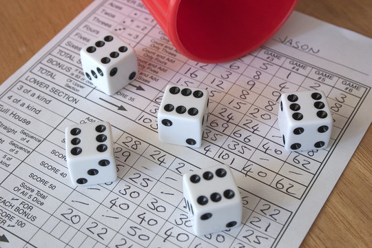
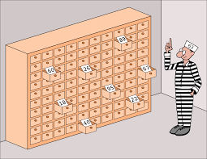

Here is a fun little project I started when I had very little Java experience- I didn't even know how to make objects yet! As bootcamp goes on I am making more and more of it work. It's taking a while because I'm getting so much homework.
This program is based on a problem first proposed by Danish computer scientist Peter Bro Miltersen in 2003. 100 numbered prisoners must find their own numbers in one of 100 drawers in order to survive. Here is a version of the problem by Philippe Flajolet and Robert Sedgewick:
The director of a prison offers 100 death row prisoners, who are numbered from 1 to 100, a last chance. A room contains a cupboard with 100 drawers. The director randomly puts one prisoner's number in each closed drawer. The prisoners enter the room, one after another. Each prisoner may open and look into 50 drawers in any order. The drawers are closed again afterwards. If, during this search, every prisoner finds his number in one of the drawers, all prisoners are pardoned. If just one prisoner does not find his number, all prisoners die. Before the first prisoner enters the room, the prisoners may discuss strategy — but may not communicate once the first prisoner enters to look in the drawers. What is the prisoners' best strategy?
Because the nature of the problem is probabilistic, my program is for simulating many iterations of a particular strategy the prisoners could try, to see each strategy's statistical success rate. As with Yahtzee, this program is not finished yet because of all the bootcamp homework I've been doing.
Are You the One? is a trashy romance reality tv show where 20 singles who self identify as 'bad at relationships' undergo an array of psychological testing to be paired with their 'pErFeCt MaTcH' (according to, in my opinion questionable, relationship experts/show producers). All 20 are placed in a house for ten weeks to binge drink and wind surf and punch walls, all while trying to find their perfect match. Each episode they must guess ten matches, and they are told only the number of correct matches. If they all find their perfect matches before the end of the show, they split a cash prize.
To kill time during lockdown, I figured out the correct set of matches multiple episodes before the contestants did. This program is to replace the spreadsheets and manual deduction I did on the first two seasons. It isn't finished yet (oh well, at least my grades are good), but when I have time, it will hold given data, deduce provable information, eliminate disprovable pairings, and allow me to add intuited guesses to have the best chance at predicting the correct solution early.